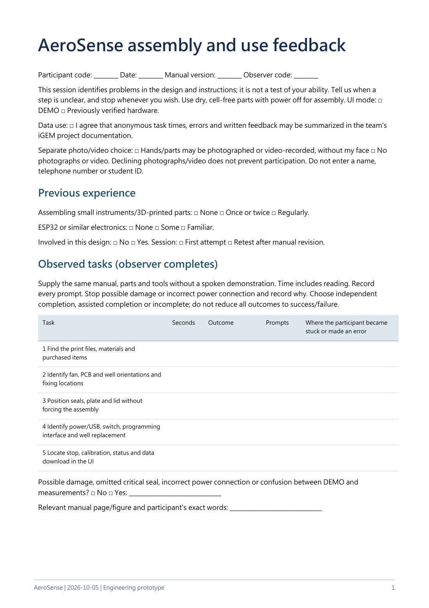
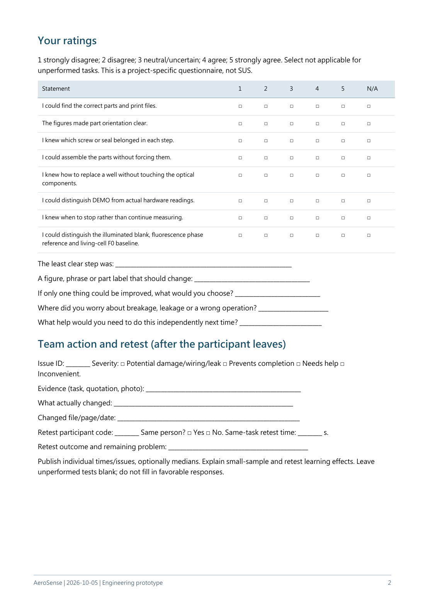

Page 1 of 2
Back to page navigation
Read extracted page text
Text extracted from the source PDF. Equations and table layout are best checked against the page image or original PDF.
AeroSense | 2026-10-05 | Engineering prototype 1 AeroSense assembly and use feedback Participant code: ________ Date: ________ Manual version: ________ Observer code: ________ This session identifies problems in the design and instructions; it is not a test of your ability. Tell us when a step is unclear, and stop whenever you wish. Use dry, cell-free parts with power off for assembly. UI mode: □ DEMO □ Previously verified hardware. Data use: □ I agree that anonymous task times, errors and written feedback may be summarized in the team's iGEM project documentation. Separate photo/video choice: □ Hands/parts may be photographed or video-recorded, without my face □ No photographs or video. Declining photographs/video does not prevent participation. Do not enter a name, telephone number or student ID. Previous experience Assembling small instruments/3D-printed parts: □ None □ Once or twice □ Regularly. ESP32 or similar electronics: □ None □ Some □ Familiar. Involved in this design: □ No □ Yes. Session: □ First attempt □ Retest after manual revision. Observed tasks (observer completes) Supply the same manual, parts and tools without a spoken demonstration. Time includes reading. Record every prompt. Stop possible damage or incorrect power connection and record why. Choose independent completion, assisted completion or incomplete; do not reduce all outcomes to success/failure. Task Seconds Outcome Prompts Where the participant became stuck or made an error 1 Find the print files, materials and purchased items 2 Identify fan, PCB and well orientations and fixing locations 3 Position seals, plate and lid without forcing the assembly 4 Identify power/USB, switch, programming interface and well replacement 5 Locate stop, calibration, status and data download in the UI Possible damage, omitted critical seal, incorrect power connection or confusion between DEMO and measurements? □ No □ Yes: ______________________________ Relevant manual page/figure and participant's exact words: ______________________________
Page 2 of 2
Back to page navigation
Read extracted page text
Text extracted from the source PDF. Equations and table layout are best checked against the page image or original PDF.
AeroSense | 2026-10-05 | Engineering prototype 2 Your ratings 1 strongly disagree; 2 disagree; 3 neutral/uncertain; 4 agree; 5 strongly agree. Select not applicable for unperformed tasks. This is a project-specific questionnaire, not SUS. Statement 1 2 3 4 5 N/A I could find the correct parts and print files. □ □ □ □ □ □ The figures made part orientation clear. □ □ □ □ □ □ I knew which screw or seal belonged in each step. □ □ □ □ □ □ I could assemble the parts without forcing them. □ □ □ □ □ □ I knew how to replace a well without touching the optical components. □ □ □ □ □ □ I could distinguish DEMO from actual hardware readings. □ □ □ □ □ □ I knew when to stop rather than continue measuring. □ □ □ □ □ □ I could distinguish the illuminated blank, fluorescence phase reference and living-cell F0 baseline. □ □ □ □ □ □ The least clear step was: __________________________________________________________ A figure, phrase or part label that should change: ______________________________________ If only one thing could be improved, what would you choose? ____________________________ Where did you worry about breakage, leakage or a wrong operation? _______________________ What help would you need to do this independently next time? ___________________________ Team action and retest (after the participant leaves) Issue ID: ________ Severity: □ Potential damage/wiring/leak □ Prevents completion □ Needs help □ Inconvenient. Evidence (task, quotation, photo): ___________________________________________________ What actually changed: ___________________________________________________________ Changed file/page/date: ____________________________________________________________ Retest participant code: ________ Same person? □ Yes □ No. Same-task retest time: ________ s. Retest outcome and remaining problem: ______________________________________________ Publish individual times/issues, optionally medians. Explain small-sample and retest learning effects. Leave unperformed tests blank; do not fill in favorable responses.